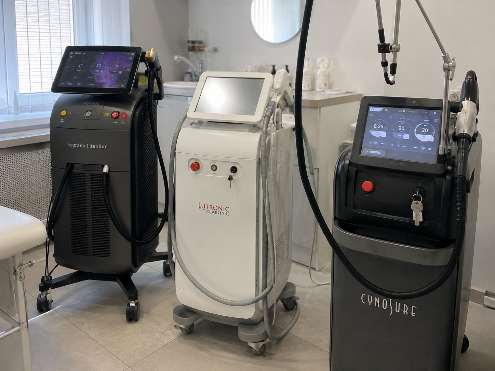
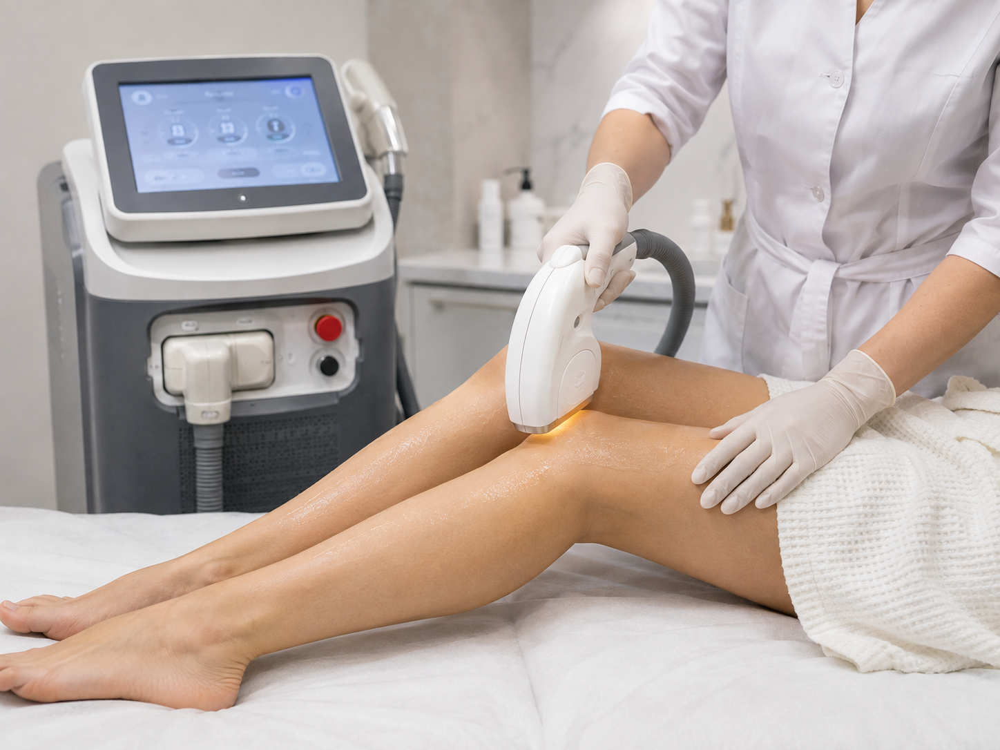
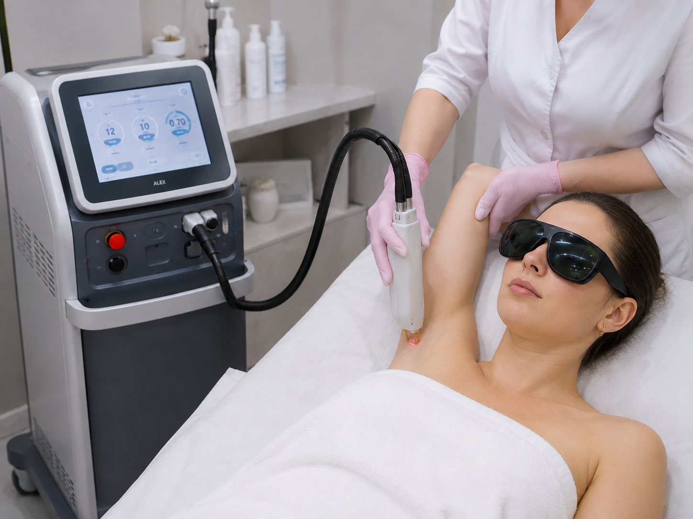
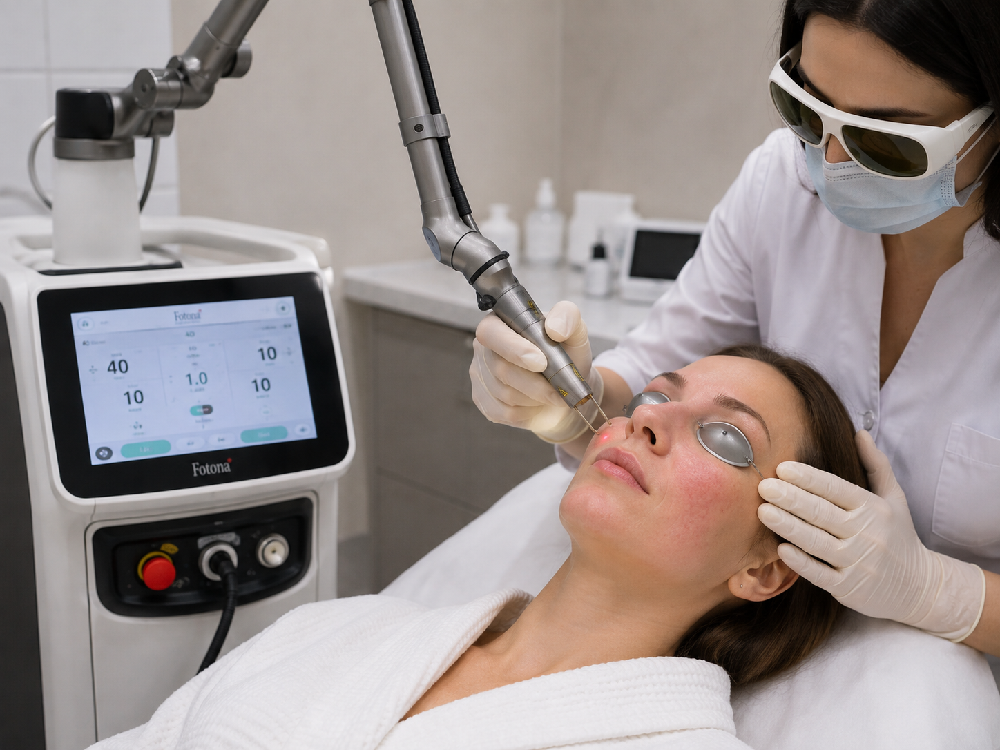
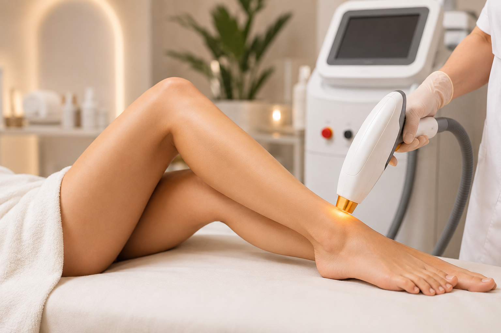

В чем разница между неодимовым, диодным и александритовым лазерами?
Лазерная эпиляция в Севастополе — одна из самых востребованных процедур современной косметологии. Однако многие пациенты не знают, чем отличаются неодимовый, диодный и александритовый лазеры, и какой аппарат подойдет именно им. Разница заключается не только в длине волны, но и в принципе воздействия, эффективности и показаниях.


Диодный лазер — современный стандарт лазерной эпиляции
В ЗимаКлиник для проведения лазерной эпиляции в Севастополе используется современный диодный лазер Magic One. Этот аппарат сочетает высокую эффективность, безопасность и комфорт во время процедуры. Информация о применении аппарата Magic One указана в описании услуг клиники.
Диодный лазер воздействует непосредственно на волосяной фолликул, постепенно разрушая его без повреждения окружающих тканей. Благодаря системе охлаждения процедура переносится комфортно даже на чувствительных участках кожи.
-
Основные преимущества диодного лазера:
- подходит большинству пациентов;
- эффективно удаляет волосы на лице и теле;
- комфортная процедура благодаря охлаждению;
- подходит для различных зон;
- обеспечивает длительный результат после курса процедур.
Именно поэтому сегодня большинство специалистов выбирают диодную технологию как наиболее универсальное решение для удаления нежелательных волос.

Александритовый лазер
Александритовый лазер отличается высокой скоростью обработки кожи. Он показывает отличные результаты у пациентов со светлой кожей и темными волосами, поскольку активно взаимодействует с меланином.
При этом данный тип оборудования имеет ограничения. Его не рекомендуется использовать после интенсивного загара, а также при некоторых фототипах кожи. Поэтому перед процедурой обязательно проводится консультация врача-косметолога.
Неодимовый лазер
Неодимовый лазер работает по другому принципу. Его энергия воздействует преимущественно на сосудистые структуры, поэтому он широко применяется в медицинской косметологии.
-
Неодимовый лазер используют при:
- лечении сосудистых изменений;
- коррекции купероза;
- работе с некоторыми видами пигментации;
- процедурах омоложения кожи.
Для классической лазерной эпиляции этот аппарат применяется значительно реже, поскольку существуют технологии, разработанные именно для эффективного удаления волос.

Какой лазер выбрать?

-
Выбор оборудования зависит сразу от нескольких факторов:
- фототипа кожи;
- цвета и толщины волос;
- зоны обработки;
- индивидуальных особенностей организма;
- наличия противопоказаний.
Именно поэтому перед процедурой важно пройти консультацию специалиста.
Если вы хотите пройти лазерную эпиляцию в Севастополе, специалисты помогут определить, какой метод подойдет именно вам. Индивидуальный подход, современное оборудование и медицинский контроль позволяют добиться безопасного и прогнозируемого результата.